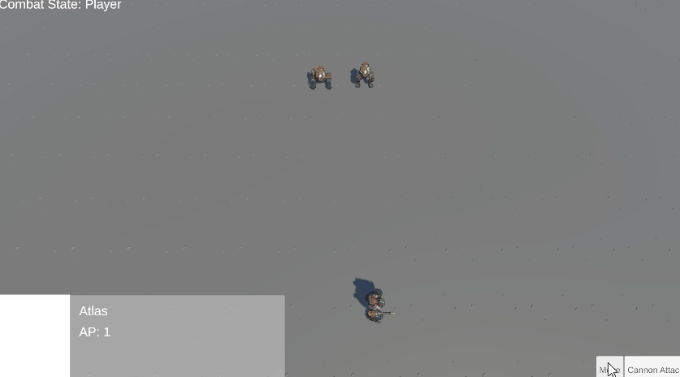
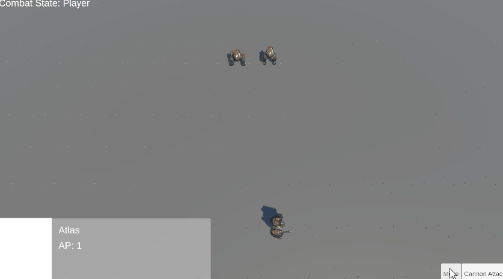

Portfolio
Table of Contents
- Gallery
- Twitch Integration Game
- Project Goblin
- Project Mech
- Project War Game
- Project Horror Candy
- Ball Launcher - Mobile Game
- We Have Watermelon Game At Home
- Relic Odyssey: Ruins of Xantao
- Dying Realm (Kenney Jam 2023)
- Colors (Dec 2022)
- Axel N'Oddol (Sept 2022 - Apr 2023)
- Summer Side Project (May 2022 - Aug 2022)
- Project Dreamer (Jan 2022 - Apr 2022)
Twitch Integration Demo
- Platform: Windows
- Genre: Casual
- Team: Solo
- Dev Time: May 23rd, 2024
- Engine: Unity
- Was researching a topic and went down a rabbit hole of topics and then wanted to test out getting twitch integration working. Project doesnt have much to it, but it saves simple data related to each chatter that interacts and then if they write in commands it alters things within the game. Game currently allows them to spawn a little character at bottom of screen that has their display name and they move around randomly. I have been brainstorming a couple types of games I can use twitch integration with.

Goblin RPG Demo
- Platform: Windows
- Genre: RPG
- Team: Solo
- Dev Time: Mar 31st - May 8th, 2024
- Engine: Unity
- A bigger project that I worked on for an extended period of time that I used as a way to improve prior systems I have written and work on some newer ones.
Dialogue System
Changed my dialogue system into a node based one for easier management and made it self containing which allows external expansion which I utilize in other systems in the game.
Quest System
Quest system that uses a Quest graph to design quest progression using nodes to show prerequisites and flow of quests. Scriptable objects for each quest that have objectives and clear conditions. Some dialogue expansions are created that expand on the Dialogue system that adds more Dialogue Nodes that influence quests. Some examples being
Party System
Party members with their own stats, skills, and equipment. Some dialogue expansions are created that expand on the Dialogue system that adds more Dialogue Nodes that influence or are influenced by Party Members. Some examples being some true/false checks if certain party member is in party, making a party member join or leave party, or making a party member become available.
Day & Night System
System that tracks the time over a 24 hour period tracked in its own scale. Subsystems within allow for ambient lighting and lights to change based on the time of day. Room for expansion for different behaviour or effects within certain time frames.
Mech Tactical RPG Demo
- Platform: Windows
- Genre: SRPG
- Team: Solo
- Dev Time: Feb 13th - Mar 3rd, 2024
- Engine: Unity
- A bigger project that I worked on for an extended period of time.
-
Tactical Combat
A tactical combat system where units move on a grid, each unit gets 2 action points to use on movement and actions. Waits for all players to do their actions and then swaps to the enemy turn and does the same for enemies.
Customization
Can swap different parts of the mech, actions available to the mech are dependant on which actions are given by the parts.
Enemy AI
When it is the enemy's turn, the AI utilizes a scenario system to make decisions on the best actions to use based on criteria
Randomization (Plot/Parcel)
When entering a battle scene, utilizing a Plot/Parcel system based on a GDC talk, it randomizes areas of the map to allow for a map created with empty plots of tiles, that the system will find a parcel that fits inside and spawn it in.

Project WarGame
- Platform: Windows
- Genre: Strategy, Auto Battler
- Team: Solo
- Dev Time: 2-3 Days
- Engine: Unity
- Was curious about planets and gravity around a sphere, started as a test to move a planet and keep a correct rotation and gravity to the planet's center. project changed into a game about placing structures and certain ones spawn different units that would find the closest enemy units/structures along the planet's surface and attack them.
Project Horror Candy
- Platform: Windows
- Genre: Horror, First Person, Puzzle
- Team: Solo
- Dev Time: 2 days
- Engine: Unity
- A small project for trying out some ideas my younger sibling wanted me to try and make about a horror game in a candy factory. First person horror game where you look down at a tablet to control different parts of the environment using different applications you get on the tablet.
Ball Launcher, Mobile Game
-
Github Link
- Platform: Android
- Genre: Physics-based
- Team: Solo
- Dev Time: Jan 31st, 2024
- Engine: Unity
- Small project to learn some basics on mobile game development. Physics based game similar to Angry Birds, catapulting a ball into objects.
We Have Watermelon Game At Home
- Itch.io Link
- Platform: Windows
- Genre: Casual
- Team: Solo
- Dev Time: Oct 30th, 2023
- Engine: Unity
- A personal project that I worked on because of the interest in an at the time popular game called Suika Game, or Watermelon Game that my wife was interested in. After interest was shown as friends and old classmates began competing for scores, spent the night implementing a leaderboard for them to compare eachother within the game. In my first update to the game I added some audio to make the game feel better.
Dying Realm (Kenney Jam 2023)
- Itch.io Link
- Platform: Windows
- Genre: RPG, Action
- Team: Solo
- Dev Time: July 21-23, 2023
- Engine: Unity
- Participated in Kenney Jam 2023 where we used assets made by Kenney to make a game with the theme of 'Exploration'. Link has a playable version of the game that can be played within the web browser.
Relic Odyssey: Ruins of Xantao
- Steam Page
- Company Website
- Platform: Windows
- Genre: FPS, Adventure
- Team: Honour Bound Game Studio
- Dev Time:
Part Time, Feb 2023 - May 2023
Full Time, Aug 2023 - Dec 2023
- Engine: Unity
- Engineer
-
Feb 2023 - May 2023:
I worked part time on weekends while in my last semester of school to help the studio create the prototype of their game to show to publishers and investors. For prototype, I helped setup Enemies with AI, and setup of some weapons, a gravity glove, checkpoints, waypoints, health system, inventory.
Aug 2023 - Dec 2023:
After funding came in I was hired full time as an Engineer on the project. While working for Honour Bound Game Studios, I was tasked with working with the UI and features that relied on it. I also worked on Weapons, Projectiles, Enemy & Boss AI, Options Settings, Optimized Colliders on objects and enemies, etc..

Colors (Game Jam Submission)
- Itch.io Link
- Platform: Windows
- Genre: Puzzle, First Person
- Team: Solo Project
- Dev Time: 5 Days (Week long GameJam)
- Engine: Unity
- (Solo Project) Programming
- The following link has a downloadable version with 2 simple levels and a test world with all the features. This was worked on as a part of a private game jam between fellow students, the theme was “Color changes everything”. We had a weeks worth of time to make and submit. (Was able to use about 4/7 of the days because it was during holidays) Colors’ main features are that objects of certain colors disappear if the world/area color is the same as that color. Other features exist like a gun that can change the color of certain objects, nodes that cause small localized areas of the color change, turrets that fire colored bullets at the player.

Axel N'Oddol
- Download Level Up 2023 Showcase Build
- Platform: Windows
- Genre: Action, Platformer
- Team: Smooth Lightning
- Dev Time: Sept 2022 - Apr 2023
- Engine: Unity
- Programming Contact, Design Contact, Build Engineer
- This is the Capstone project of the Game Development Course at Algonquin College. We decided to make Axel N’ Oddol, a 3D Platformer Collect-a-thon game. Gaining more experience on how to handle team meetings and weekly 20 hour sprint goals while working in our team of 6. I worked as one of two programmers on the project, I took the roles of programming contact, design contact, and build engineer.
Game Elements Worked On:
-
Dialogue
A simple dialogue system designed using a previous version in a different game engine.
-
User Interface
The main menu, options menu, and pause menu programming and arrangement of UI elements.
-
Water Movement
The characters movement in water and the transitions between normal movement, in the water, and under the water.
-
Level Transitioning
Portals created to allow the character to move through them to transition to the designate level set in the portal as well as move to the designated level entrance associated with the previous level.
-
Options
The options menu and how the options affects audio, graphics, and controls.
-
Collectables
The collectables, the pickup range, as well as tools to give them all unique IDs and to arrange them in lines within the world.
-
Save System
The system that saves the game and options, converts save data into a binary file to help protect against changing of save data outside of the game.
-
Bug Fixes & Optimizations
Analyzed weekly testing results to locate bugs and perform fixes and parts of code to optimize.
-
Boss Fight
Worked on most of the boss fight and mechanics.
-
Controller Support
Ensured that controllers could be used on the game and it's UI.
-
Tutorial
Created a way for designers to easily add in locations for tutorial information to show.

Summer Tech Demo
- Github Link
- Platform: Windows
- Genre: RPG
- Team: Solo Project
- Dev Time: 3 Months (Part-Time)
- Engine: Unreal Engine 4
- (Solo Project) Programming
- This was something to keep me busy during the break between semesters, didn’t get as much work done in this as I wanted to. This was mostly redesigns and improvements of features I made in the mini capstone project in the previous semester.
Game Elements Worked On:
-
Dialogue
I had a new approach to dialogue that I was trying where I used an ECS for constructing conversations. There were three main types, Descriptor, Dialogue, and Choice. Depending on which type the conversation would load next it would change the UI appearance and how to read the data.
-
Item
Minor changes to existing Item ECS design from previous project.
-
Level Transitioning
The player can move through certain triggers to load into a different map.

Project Dreamer
- Github Link
- Platform: Windows
- Genre: RPG, Adventure
- Team: Radical Dreamers
- Dev Time: Jan 2022 - Apr 2022
- Engine: Unreal Engine 4
- Lead Programmer, UI Programmer
- This was our college’s “mini” capstone project, where we spent a semester gaining experience on how to manage a group project. Managing included team meetings and Bi-Weekly sprint goals while working in our team of four. I worked as the sole programmer on the project while the other three worked on art and design.
Game Elements Worked On: (Links to Documentation)
-
Items
Easy way to create unique items using blueprints and an ECS.
-
Inventory
System that allows the player to store and use items.
-
Equipment
Players can change character’s equipment and see the stats change to indicate the change.
-
Crafting
Players will have a list of item recipes they can make and can be given more throughout the game’s story. Items when created can have a “Craftable” component adding on to the item’s ECS which has a list of it’s ingredients.
-
Dialogue
Players can interact with objects or NPCs to initiate dialogue.
-
Menus
Navigatable menus like: Inventory, Crafting, Equipment, Status, Etc..
Gallery


 
